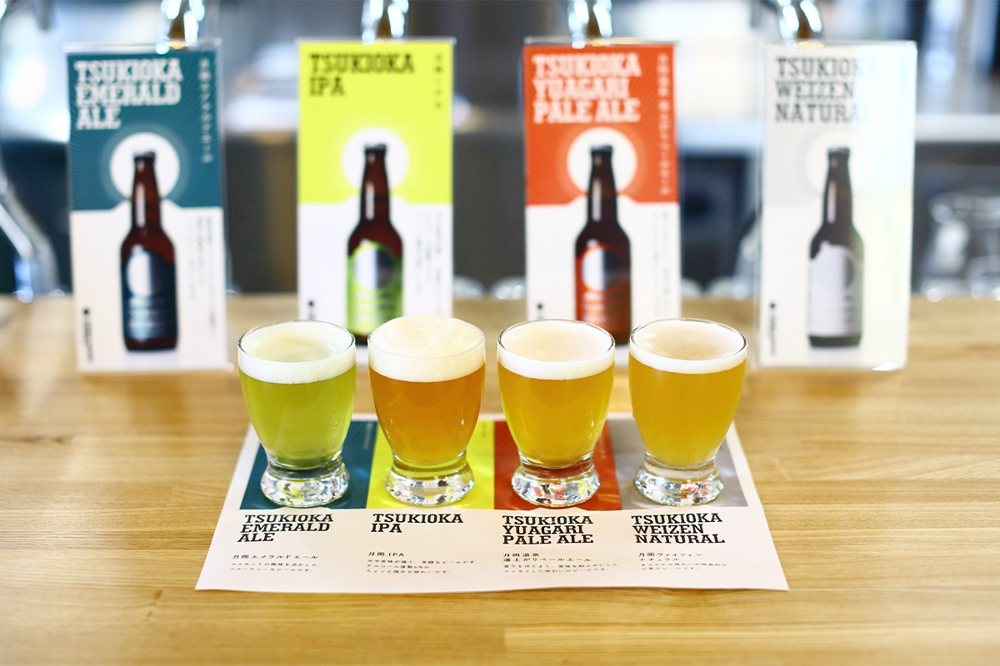
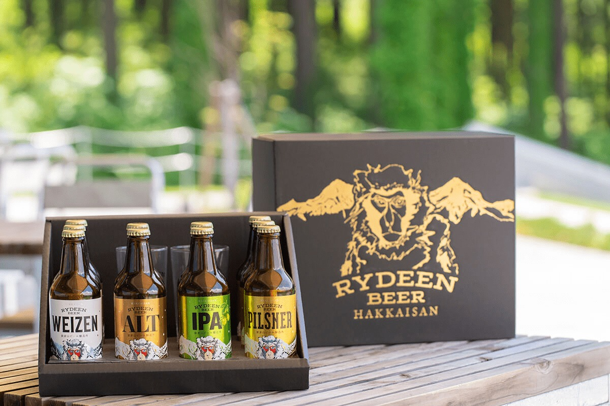
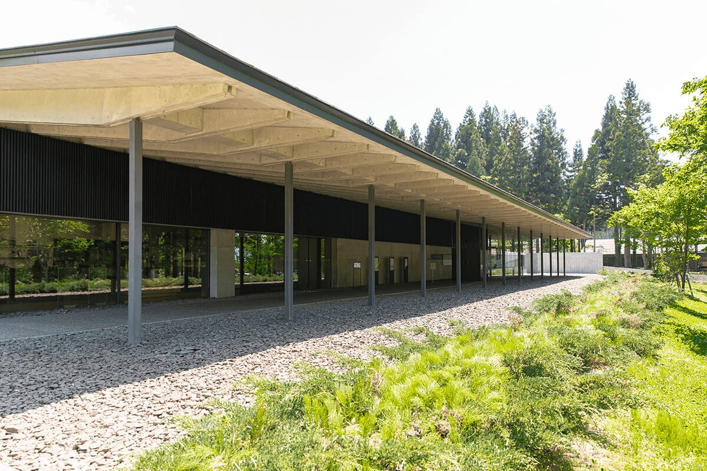
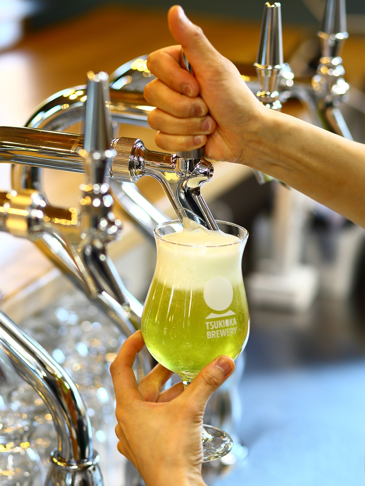
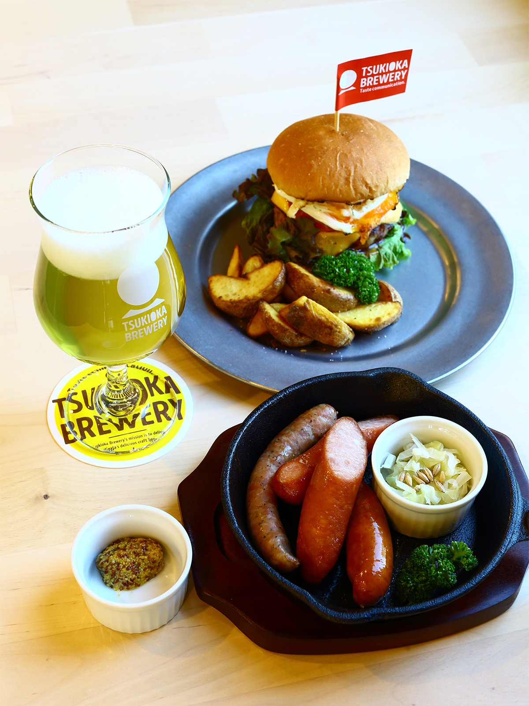
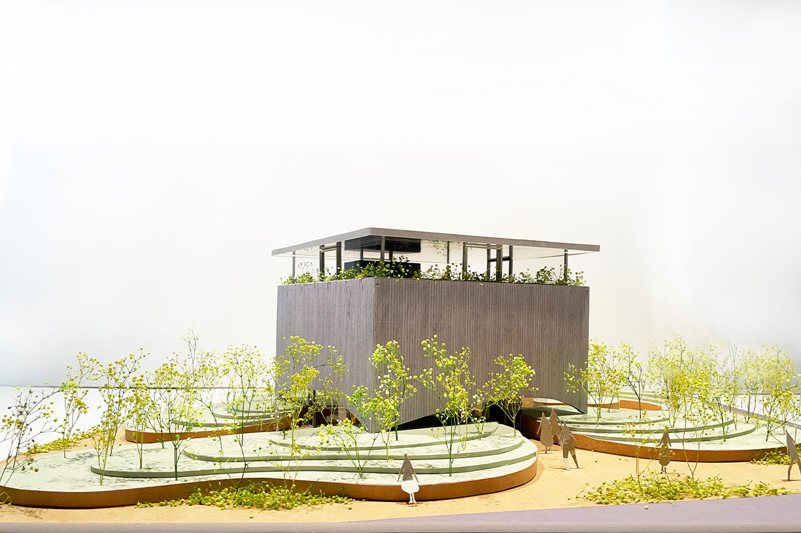
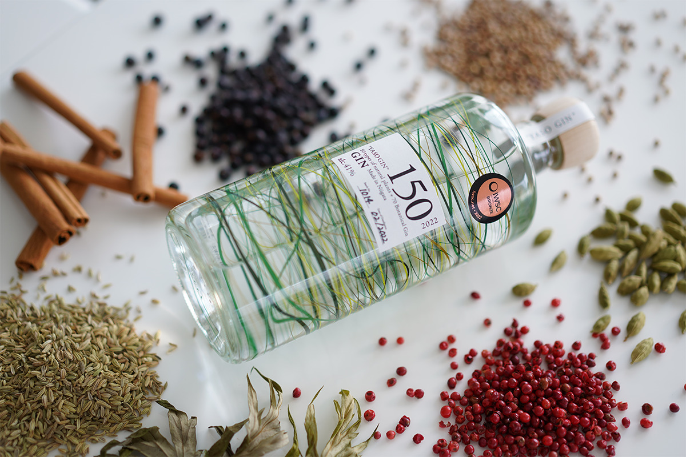
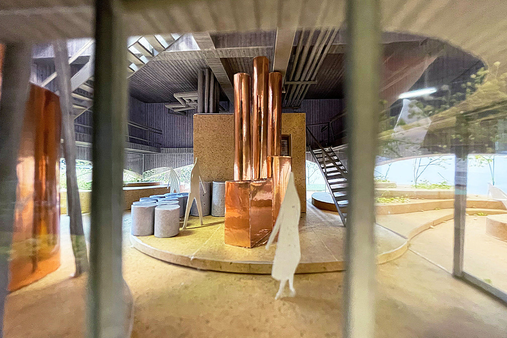
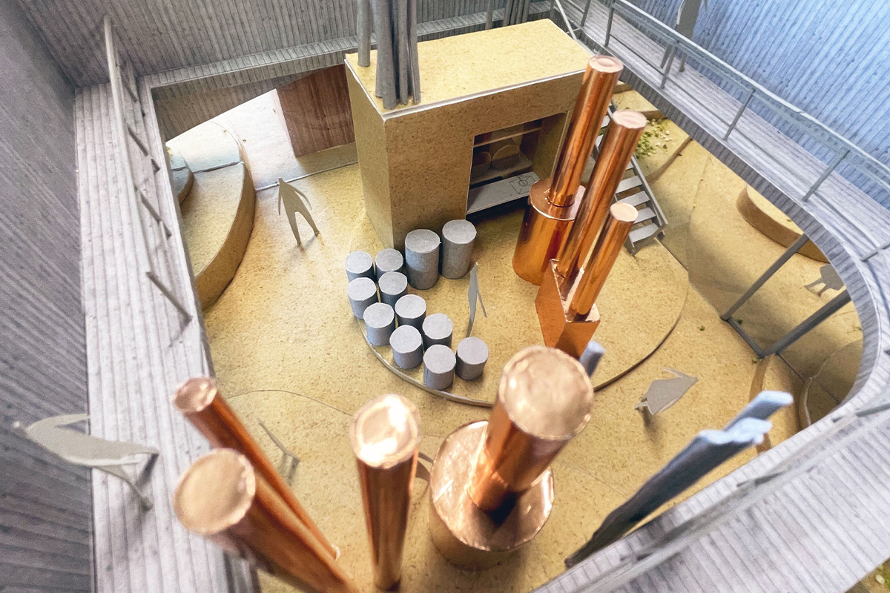
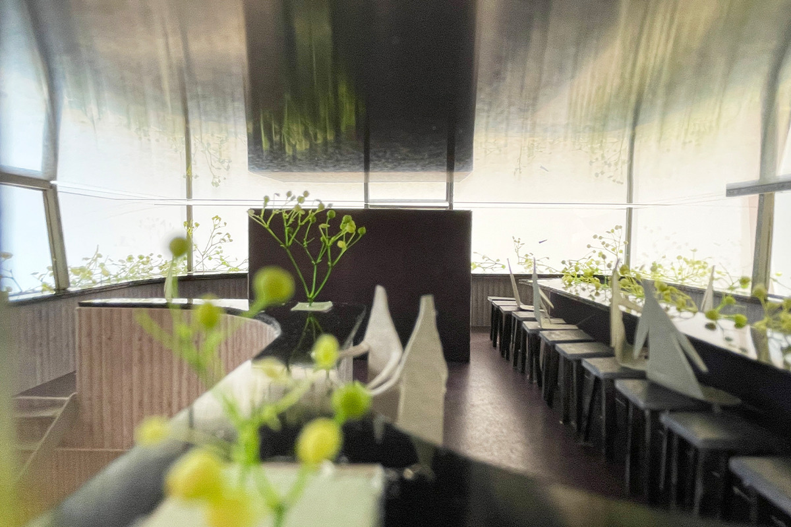

Префектура Ниигата · Минамиуонума, Сибата, Дзёэцу · напитки
Что пьют в Ниигате: сакэ Hakkaisan, изумрудное пиво Цукиока и джин из восьмидесяти трав

Ниигату в Японии знают как край сакэ, но пьют здесь не только его. Здесь три истории: о сакэварне, которая считает главным своим долгом обычное повседневное сакэ, о пиве цвета горячего источника и о винокурне, где из остатков производства рождается джин.
Сакэ
Hakkaisan: сакэ на каждый день
Сакэварня Hakkaisan стоит в Минамиуонуме, на юге префектуры. Её основали примерно за сто лет до интервью 2019 года с простой мыслью: пусть местные жители пьют хорошее сакэ каждый день. Дзиро Нагумо пришёл в компанию в 1983 году, а в 1997 году стал её третьим главой. Он заново выстроил традиционные приёмы варки и поставил себе задачу сделать высококачественным именно то сакэ, которое пьют без повода.
В 2019 году он объяснял, что для него значит «хорошая вещь». Это то, что мастер делает изо всех сил, потому что сам хочет это сделать. Настоящая ценность появляется, когда это признают многие люди. Но у сакэварни есть и особый долг, который Нагумо называет «ответственностью за поставки», и касается он прежде всего обычного, «регулярного» сакэ.
«Если спрос растёт, а мы говорим: товара нет, продать не можем, или если цена поднимается, значит, качество повседневного продукта упало. Поэтому мы всё время добиваемся и высокого качества, и стабильных поставок»
Дзиро Нагумо, глава сакэварни

Сакэ тесно связано с местом, где его варят, и сакэварня, конечно, хочет быть полезной своему краю. Но Нагумо считает, что начинать надо с другого: сначала самим стать тем, чем местные жители могут гордиться, а польза для края придёт как следствие. С этой мыслью компания открыла комплекс «Уонума-но сато». Здесь можно почувствовать, как красива природа Уонумы, и через это лучше понять, как варят сакэ, которое считается сакэ именно этой земли.

О японском сакэ сакэварня рассказывает и за границей. В июне 2019 года бочки Hakkaisan, среди них бочки пива RYDEEN BEER, выставляли в токийском аэропорту Ханэда. Аэропорт Нагумо называет главными воротами для гостей из других стран.
«Человек, который ещё не пробовал сакэ, знакомится с японскими напитками в самолёте или в аэропорту, возвращается домой и рассказывает о них. Так о них узнают всё больше людей»
Дзиро Нагумо, глава сакэварни
«Уонума-но сато» (Hakkaisan)
- Адрес
- префектура Ниигата, Минамиуонума, Нагамори, 459
- Сайт
- hakkaisan.co.jp
Пиво
TSUKIOKA BREWERY: пиво цвета горячего источника
Онсэн Цукиока в городе Сибата, на севере префектуры, считается одним из главных курортов восточной Японии. Его вода изумрудно-зелёного цвета, а серы в ней больше, чем почти в любом другом источнике страны, поэтому её называют водой для красивой кожи. Источник открыли в 1915 году. Издавна сюда ехали на тодзи, долгое лечение горячей водой, и в городке до сих пор много старых улиц, рёканов для такого отдыха и лавок, где время будто остановилось.
В двух шагах от ножной ванны «Ютарими», куда сходятся гуляющие по курорту, в 2020 году открылась пивоварня TSUKIOKA BREWERY. Её основали втроём: сомелье сакэ из магазина сакэ в Сибате, человек, который ведёт в городе туристический центр отдыха, и управляющая этим центром. Сомелье стал главным пивоваром: варить пиво он учился на пивоварне в префектуре Тотиги.


Сортов пива четыре. Главный из них «Цукиока Эмеральд Эль», и задуман он в цвет местной воды. Крафтовое пиво можно варить по любому рецепту, поэтому пивовары сумели передать этот изумрудный оттенок и добавили мускатный виноград, чтобы эль легко пили и те, кто к пиву не привык. Для подарков сделали собственную упаковку с ручкой, удобную в дорогу. При пивоварне работает KITCHEN GEPPO: здесь можно поесть и купить пиво в бутылках.
Бокал местного пива после горячей воды: так на онсэне Цукиока можно закончить день.
TSUKIOKA BREWERY
- Адрес
- префектура Ниигата, Сибата, Цукиока-онсэн, 552-111
- Телефон
- +81 254-28-9161
- Часы работы
- 10:00–17:00 (последний заказ 16:00), в пятницу и субботу до 21:00 (последний заказ 20:00)
- Выходные
- четверг
- Цены / Вход
- пиво 600 иен за бокал (2020)
Джин
«Этиго якусо дзёрюсё»: джин из восьмидесяти трав

Компания «Этиго якусо» из Дзёэцу, на западе префектуры, больше сорока лет делает здоровое питание и изучает ферменты из диких трав. В 2022 году она объявила о собственной винокурне «Этиго якусо дзёрюсё»: открыть её собирались в конце августа того же года. Здесь делают спирт и джин под маркой YASO. В основе восемьдесят видов сырья, в первую очередь дикие травы. Название сложено из двух японских слов, которые звучат почти одинаково: «ясо», «восемьдесят», и «ясо», «дикие травы».

Дзёэцу будто создан для брожения: лето здесь жаркое и влажное, зима холодная и тоже влажная. Зимой идёт снег, и разница температур за год больше сорока градусов, поэтому выживают только самые стойкие микробы. Компания пользуется этим и готовит ферменты при «естественной температуре», то есть нарочно не регулирует ни тепло, ни влажность.
Винокурню задумали так, чтобы после неё не оставалось никакого мусора. При производстве травяных продуктов появляется спирт: его собирают и делают из него напитки. Травы, которые остались после ферментных напитков, джина и спирта, перерабатывают в удобрение. На нём растят травы, а травы снова идут в напитки. Компания называет это не переработкой отходов, а кругом, который бережёт природу, и рассчитывает его на пятьдесят и сто лет вперёд.
Винокурню построили как музей, где YASO можно почувствовать всеми чувствами: здесь видно, как идёт перегонка, есть современное искусство, бар и виды Дзёэцу. Наружные стены сделаны под дерево, и для этого узора в опалубку клали местную криптомерию. Стойку бара на третьем этаже сложили из камня, добытого в окрестностях Дзёэцу.

На втором этаже рассказывают историю компании и показывают временные выставки о растениях и брожении. Третий этаж стеклянный со всех сторон: здесь бар, где YASO подают вместе с местными продуктами, а вокруг открывается круговая панорама. В 2026 году винокурня открывалась для гостей только в отдельные дни по записи.


«Этиго якусо дзёрюсё»
- Адрес
- префектура Ниигата, Дзёэцу, Косаруя, 73 (адрес компании)
Фото: Кадзуя Хаяси.